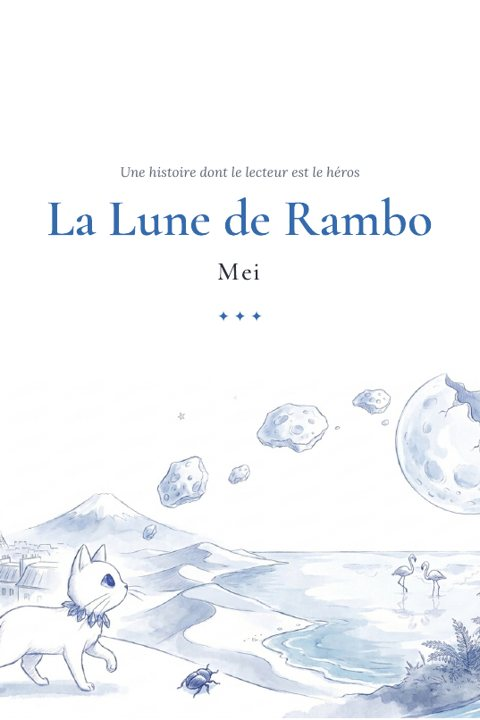
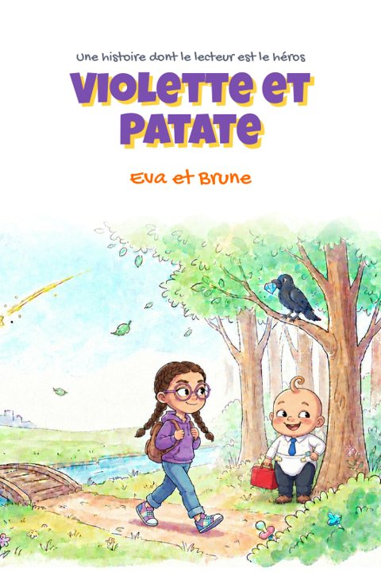
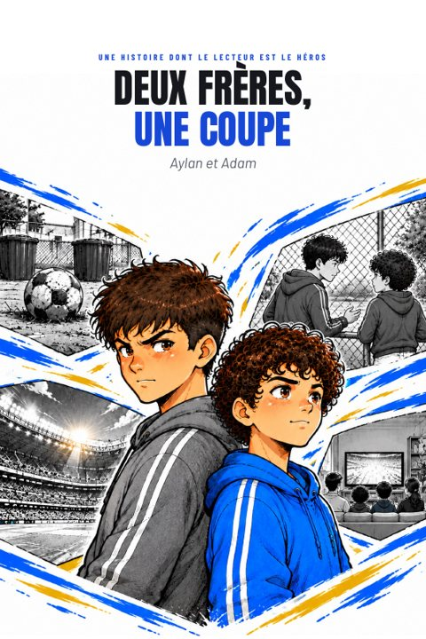
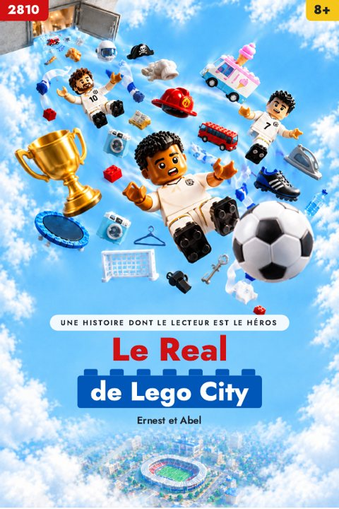

La Lune de RamboMeiDeux Ormes
Violette et PatateEva et BruneDeux Ormes Le voleur de diamantsNinaDeux Ormes
Le voleur de diamantsNinaDeux Ormes Le fermier au chapeau de pailleAntoine et ÉmileDeux Ormes
Le fermier au chapeau de pailleAntoine et ÉmileDeux Ormes Les trois sœursAgathe, Aliya et TeresaLi Campaneto
Les trois sœursAgathe, Aliya et TeresaLi Campaneto L’île aux dragonsLouisa et JuneLi Campaneto
L’île aux dragonsLouisa et JuneLi Campaneto
Deux frères, une coupeAylan et AdamLi Campaneto
Le Real de Lego CityErnest et AbelLi Campaneto